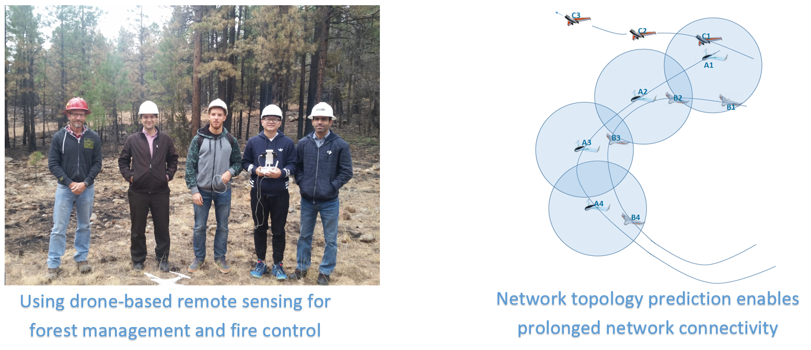
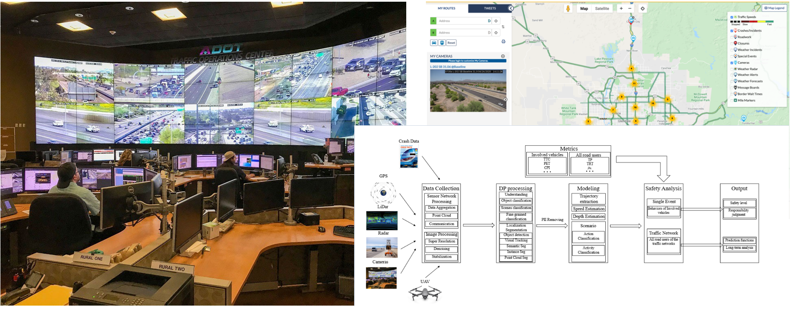
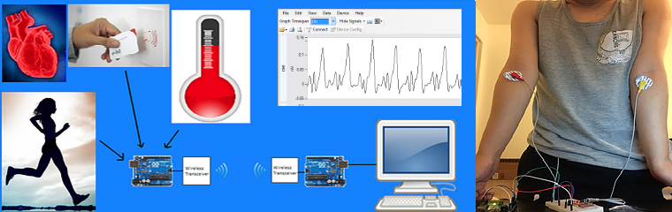
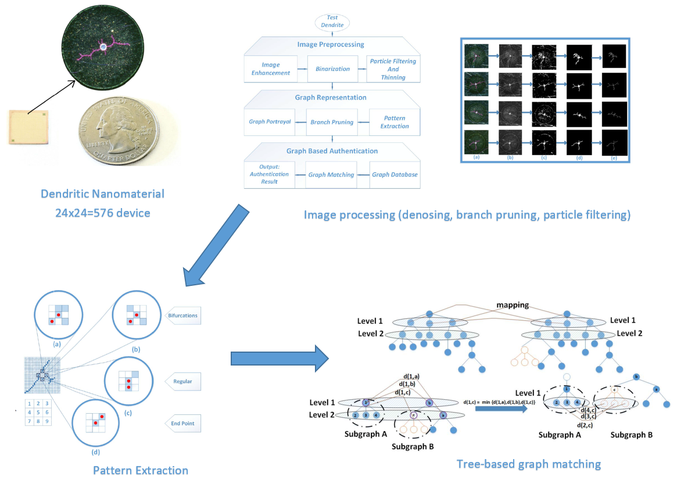
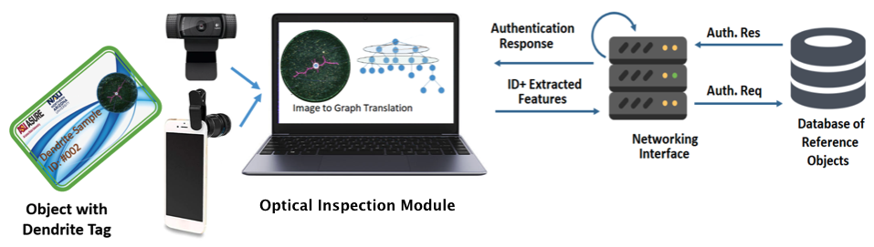
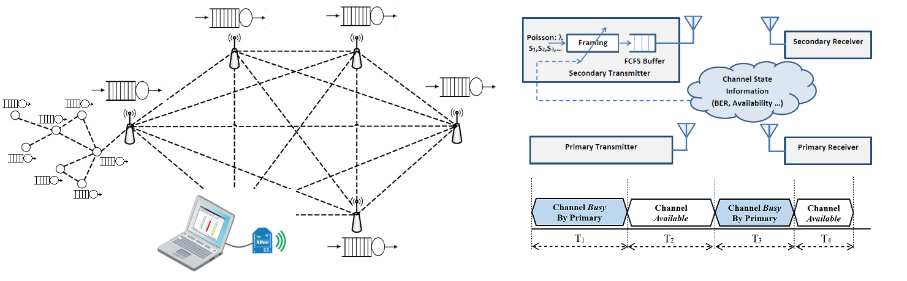
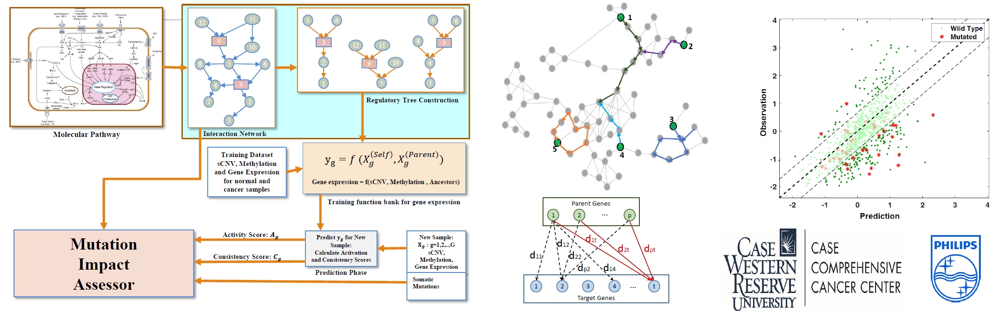
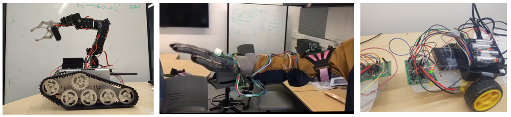

FLAME 2 Wildfire Dataset
This work presents a methodology for identifying and mapping fire and smoke using high temporal
and spatial-resolution observations from an integrated two sensor (mid-wave IR and visible bands)
UAS-based imaging system. The paper also presents a unique dataset of side-by-side RGB/IR imagery
collected during a prescribed fire near Flagstaff, Arizona in 2021 [20]. The images are jointly
labeled by two human experts with fire/no-fire and smoke/no-smoke1 labels. In additional to aerial
images, data on weather information, and georeferenced pre-burn point cloud data points are included
in the dataset. It is expected that the methods developed to produce the FLAME2 dataset and others
to follow can facilitate fire detection and modeling, as well as fire management.


Project Page
DH-GAN
We propose a new DL architecture based on generative adversarial networks that uses
a discriminative network for realizing a semantic measure for reconstruction quality while using
a generative network as a function approximator to model the inverse of hologram formation. We
impose smoothness on the background part of the recovered image using a progressive masking
module powered by simulated annealing to enhance the reconstruction quality. The proposed method
is one of its kind that exhibits high transferability to similar samples, which facilitates its fast
deployment in time-sensitive applications without the need for retraining the network


Project Page
Deep Learning-TSA
This paper explores deep learning (DL) methods that are used or have the potential to be used for
traffic video analysis, emphasising driving safety for both autonomous vehicles and human-operated
vehicles. A typical processing pipeline is presented, which can be used to understand and interpret
traffic videos by extracting operational safety metrics and providing general hints and guidelines
to improve traffic safety.


Project Page
Predictive UAV Communications Networks
In this project, we plan to build the next generation of communication and control protocols
for flying Adhoc Networks (FANET). The idea is to move beyond the current
practice of adaptive communications by predicting network topology dynamics
and incorporating it into the different levels of communication protocols
including routing, connectivity, topology control, task management, optimal sampling,
and etc. This project is in the intersection of wireless networking,
machine learning, graph theory, and distributed optimizations.

Driving Safety Analysis
We are working with Intel, Exponent, Arizona Department of Transportation,
ASU, and UA to develop the Institute of Automotive Mobility (IAM) under
a project funded by the Arizona Commerce Authority. This project concerns
developing learning-based AI platforms to enhance the driving safety of
self-driving and human-drive vehicles in the state of Arizona.
The overarching goal of this initiative is developing traffic advisory systems,
traffic system design guidelines, and online warning systems.
My team is working on developing a learning-based anomaly detection method
by processing network-level motion trajectories and profiling user's
normal behaviors and driving style.

Remote Heart Monitoring
In this project, we are working on developing an individualized kit for
remote monitoring of heart-related vital signals in order to trigger
local and remote alarms when a life-threatening abnormality is
predicted through analyzing the vital signals. The vital signals may
include the heart ECG signal, environmental conditions (temperature and humidity),
light, chemical pollutants, and activity level of a patient.
RFID technology is used to identify patients. In training phase,
the informative features of the vital signals will be extracted in
order to capture the normal pattern of the signals at different states
(sleep, wakefulness, physical exercise, ...). The kit will constantly
monitor the signals and send it through a wireless channel to a central
processing unit for further analysis. The system will ignite an alarm
on the kit and will send an alarm message to the physician if abnormality is detected.

Image Based Nano-Resolution Optical Security for IoT
In this project, we develop novel graph-theoretic authentication
algorithms for IoT security using dendrites, as unclonable nano-material
identifiers with unique 3d tree-structured patterns.
This project involves topics in machine learning, image processing
and security algorithm design. The dendrite devices are built by our collaborators at ASU.


Optimal Packetization Policy for Secondary Users in Cognitive Radio Networks
In this project, we consider the entry point of Wireless Sensor Networks,
where the sensor measurements are bundled into packets to be sent to a data fusion center.
In current practical WSN platforms, the packet lengths are either constant or
sole defined by input traffic statistics. In this project, we design an optimized
packetization policies that constantly tracks the wireless channel conditions
and adjusts the packetization criterion based on the current channel conditions.



Computational Framework to Assess Functional Mutations Impacts
In this project, we develop a deep learning framework based on Bayesian
hierarchical models in order to capture the regulatory relations among
genes and protein complexes. This network model enables prediction
of gene expression level for any cancer sample. We are looking to
develop an impact analysis framework to identify somatic mutations in
the parent genes that cause severe deviations in gene expression levels
that leads to carcinogenesis. The results of this research will provided
hypotheses for cancer-driver mutations for oncology community with application
in targeted therapy design.

Robotics Design
We design robotics platforms to test advanced communication and control
algorithms for real world applications. It also helps our undergraduate
students practice on-board programing and hardware design.
